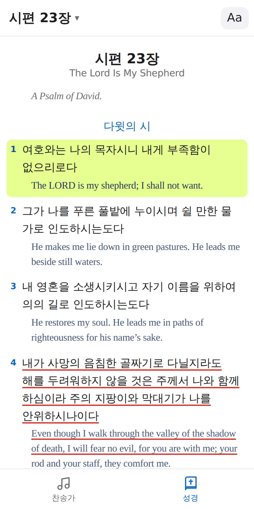
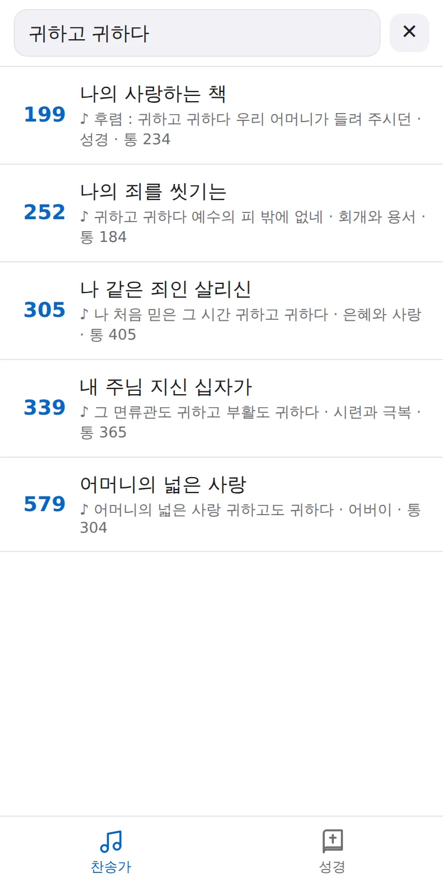
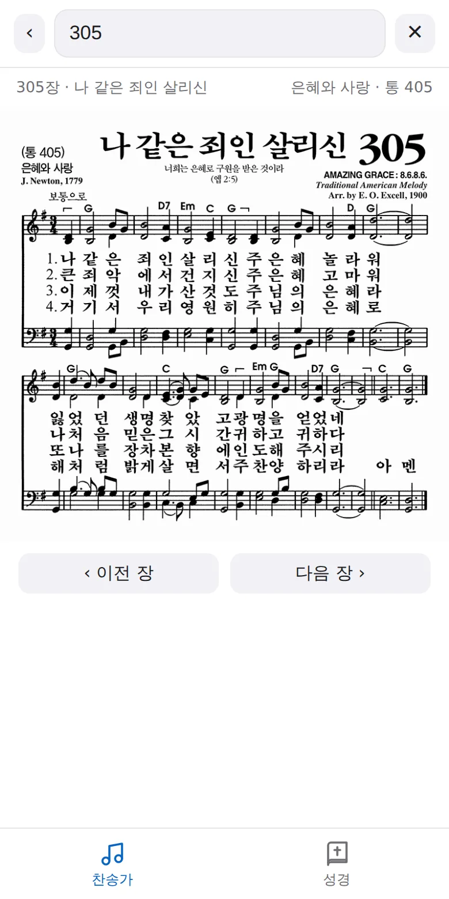
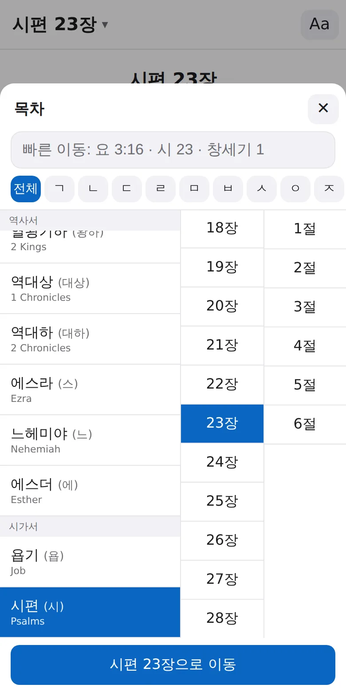

성경과 찬송가, 딱 그 둘만.
아이폰 홈 화면에 올려 쓰는 나만의 성경·찬송가.
성경 앱은 많고 찬송가 앱도 있지만, 예배 시간에 둘을 한 화면에서 오가는 앱은 찾기 어렵습니다. 그래서 필요한 것만 남기고 직접 만들었습니다.
옆으로 넘겨 보세요.




앱스토어 없이, 사파리에서 30초.
개인 사용 목적으로 만든 앱입니다. 성경 본문은 개역개정(대한성서공회)·ESV(Crossway), 찬송가는 한국찬송가공회 새찬송가입니다.